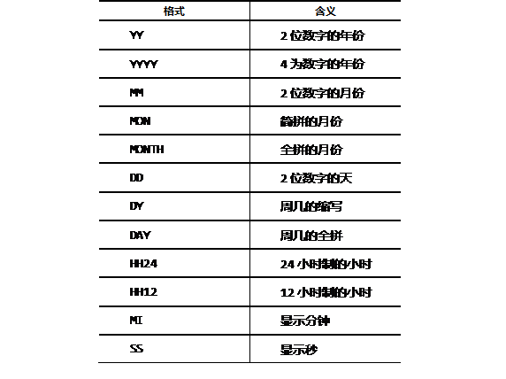

CHAR和VARCHAR2类型都是用来表示字符串数据类型，用来在表中存放字符串信息, 比如姓名、职业、地址等。
CHAR存放定长字符，如果数据存不满定长长度，则补齐空格；
VARCHAR2存放变长字符，实际数据有多少长度则占用多少。
如保存字符串’HELLOWORLD’，共10个英文字母：
CHAR类型浪费空间换取查询时间的缩短，VARCHAR2节省空间查询时间较CHAR类型要长。字符串按照自然顺序排序。
字符串在数据库中存储的默认单位是字节，也可显式指定为字符。如：
每个英文字符占用一个字节，每个中文字符按编码不同，占用2-4个字节：
CHAR类型的最大取值为2000字节，也就是定义为CHAR（2000）。其中最多保存2000个英文字符，1000个汉字（GBK）。
VARCHAR2最大取值为4000字节，也就是VARCHAR2（4000），最多保存4000个英文字符，2000个汉字（GBK）。
CHAR如果不指定长度，默认为1个字节， VARCHAR2必须指定长度。
LONG类型可以认为是VARCHAR2的加长版，用来存储变长字符串，最多达2GB的字符串数据，但是LONG类型有诸多限制，所以不建议使用：
CLOB用来存储定长或变长字符串，最多达4GB的字符串数据，ORACLE建议开发中使用CLOB替代LONG类型，比如如下方式定义数据表：
- CREATE TABLE student(
- id NUMBER(4),
- name CHAR(20),
- detail CLOB);
CONCAT是字符串连接函数，语法是：
- CONCAT(char1, char2)
用于返回两个字符串连接后的结果，两个参数char1、char2是要连接的两个字符串。concat只能有两个参数，所以如果连接三个字符串时，需要两个concat函数。比如连接emp表中的name列和salary列，中间用“：”隔开：
- SELECT CONCAT(CONCAT(name, ' : '), sal)FROM emp;
图-1 CONCAT连接字符串的结果
在连接两个以上操作符时并不是很方便。concat的等价操作是连接操作符”||”。当多个字串连接时，用||符号更直观。下述SQL语句实现相同的效果：
- SELECTename || ' : ' || sal FROMemp;
在连接时，如果任何一个参数是NULL，相当于连接了一个空格。
LENGTH(char)用于返回参数字符串的长度。如果字符类型是VARCHAR2，返回字符的实际长度，如果字符类型是CHAR，长度还包括后补的空格。例如：
- SELECTename, LENGTH(name) FROM emp;
将列出name和name的字符串长度：
图-2Lenth函数的运行结果
这三个函数全部是英文的大小写转换函数，用来转换字符的大小写：
如果这三个函数的输入参数是NULL值，仍然返回NULL值。例如：
- SELECT UPPER('hello world'), LOWER('HELLO WORLD'), INITCAP('hello world')
- FROM DUAL;
将列出参数“hello world”的大写、小写和首字符大写的形式。一般用来查询数据表中不确定大小写的情况。查询结果如图-3所示。
图-3大小写转换函数的运行结果
这三个TRIM函数的作用都是截去子字符串。语法形式及解释：
在后两个函数中，如果没有参数c2，就去除空格。例如：
- SELECT TRIM('e' from 'elite') AS t1,
- LTRIM('elite', 'e') AS t2,
- RTRIM('elite', 'e') AS t3
- FROM DUAL;
其中最常用的是TRIM，经常用来去掉字符串前后的空格。运行结果如图-4所示。
图-4TRIM函数的运行结果
PAD意即补丁，LPAD和RPAD两个函数都叫做补位函数，LPAD表示LEFT PAD，在左边打补丁，RPAD表示RIGHT PAD，在右边打补丁。语法如下：
参数的含义：在字符串参数char1的左端或右端用char2补足到n位，其中参数char2可重复多次。例如在EMP表中使用左补位，将sal用$补齐6位，运行结果如图-5所示。
图-5补位函数的运行结果
SUBSTR表示在一个字符串中截取子串，语法是：
- SUBSTR(char, [m[, n]])
用于返回char中从m位开始取n个字符的子串，字符串的首位计数从1开始。参数含义如下：
例如：
- SELECT
- SUBSTR('Doctor Who travels in TARDIS', 8, 25)
- FROM DUAL;
图-6取子串函数的运行结果
用来返回在一个字符串中子串的位置。语法是：
- INSTR(char1, char2[, n [, m]])
参数的含义：
例如：
- SELECT INSTR('Doctor Who', 'Who') words FROM DUAL;
结果将返回8.
数据表中的数值类型用NUMBER表示，完整语法是：
- NUMBER(precision ，scale)
可以用来表示整数和浮点数。如果没有设置参数s，则默认取值0，即NUMBER(p)用来表示整数。P表示数字的总位数，取值为1-38。一般用来在表中存放如编码、年龄、次数等用整数记录的数据。例如建表时指定学生编码是4位数字：
- CREATE TABLE student (
- id NUMBER(4),
- name CHAR(20));
如果NUMBER(precision ，scale)的两个参数全部显式定义，则表示浮点数：
如果指定了s但是没有指定p，则p默认为38，例如：
- 列名 NUMBER（*，S）
NUMBER（p,s）经常用来做表中存放金额、成绩等有小数位的数据。例如创建学生表，指定成绩整数位最多3位，小数位最多2位：
- CREATE TABLE student (
- id NUMBER(4),
- name CHAR(20),
- score NUMBER(5, 2));
NUMBER的变种数据类型：内部实现是NUMBER，可以将其理解为NUMBER的别名，目的是多种数据库及编程语言兼容
数值函数指参数是数值类型的函数。常用的有ROUND、TRUNC、MOD、CEIL和FLOOR。其中ROUND用来四舍五入，语法如下：
ROUND(n[, m])用于将参数n按照m的数字要求四舍五入。其中：
例如：
- SELECT ROUND(45.678, 2) FROM DUAL; --45.68
- SELECT ROUND(45.678, 0) FROM DUAL;--46
- SELECT ROUND(45.678, -1) FROM DUAL;--50
TRUNC(n[, m])的功能是截取，其中n和m的定义和ROUND(n[, m])相同，不同的是功能上按照截取的方式处理数字n。例如：
- SELECT TRUNC(45.678, 2) FROM DUAL; --45.67
- SELECT TRUNC(45.678, 0) FROM DUAL;--45
- SELECT TRUNC(45.678, -1) FROM DUAL;--40
MOD(m, n)是取模函数，返回m除以n后的余数，如果n为0则直接返回m。例如：
- --薪水值按1000取余数
- SELECTename, sal, MOD(sal, 1000) FROM emp;
图-7薪水列按1000取模后的运行结果
CEIL(n)、FLOOR(n)这两个函数顾名思义，一个是天花板，就是取大于或等于n的最小整数值，一个是地板，就是取小于或等于n的最大整数值。比如数字n = 4.5，那么它的CEIL是5.0，它的FLOOR是4.0。在SQL语句中的例子如下：
- SELECT CEIL(45.678) FROM DUAL; --46
- SELECT FLOOR(45.678) FROM DUAL;--45
DATE和TIMESTAMP是ORACLE中最常用的日期类型。DATE用来保存日期和时间。表示范围从是公元前4712年1月1日至公元9999年12月31日。
DATE类型在数据库中的实际存储固定为7个字节，格式分别为：
TIMESTAMP表示时间戳，与DATE的区别是不仅可以保存日期和时间，还能保存小数秒，可指定为0-9位，默认6位，最高精度可以到ns(纳秒)级别。
数据库内部用7或者11个字节存储，精度为0时，用7字节存储，与DATE功能相同，精度大于0则用11字节存储。格式为：
用日期类型建表的例子：
- CREATE TABLE test(
- c1 DATE,
- c2 TIMESTAMP(9));
SYSDATE本质是一个Oracle的内部函数，用来返回当前的系统时间，精确到秒，默认显示格式是DD-MON-RR，只有年月日并不显示时间。例如：
- SELECT SYSDATE FROM DUAL;
如果数据库是英文环境，将显示“03-MAY-14”的形式，如果是中文环境，将显示“03-5月-14”的形式。如果想显示时分秒，需要将格式转换一下：
- SELECT TO_CHAR(SYSDATE,'yyyy-mm-dd day hh24:mi:ss') FROM DUAL;
运行结果是：
图-8显示当前的系统时间
在建表时，可以将系统时间SYSDATE作为某一列的默认值，当插入新的记录，将会取当时的系统时间，作为数据表的一列数据保存起来。例如学生表，学生的注册时间列即默认取值数据记录插入的时间：
- CREATE TABLE student (id NUMBER(4),
- name CHAR(20),
- registerDate DATE DEFAULT SYSDATE);
SYSTIMESTAMP也是Oracle的内部日期函数，返回当前系统日期和时间，精确到毫秒。例如：
- SELECT SYSTIMESTAMP FROM DUAL;
- SELECT TO_CHAR(SYSTIMESTAMP,'SSSS.FF') FROM DUAL;
日期数据有时需要和字符串数据相互转换，需要用到日期转换函数，包括TO_CHAR和TO_DATE。
TO_DATE的功能是将字符串按照定制格式转换为日期类型，语法格式是：
- TO_DATE(char[, fmt[, nlsparams]])
其中：char是要转换的字符串，fmt是转换格式，nlsparams是指定日期语言。其中比较重要的是格式，常用的日期格式如下：
表-1 常用日期格式
例子：查询2002年以后入职的员工：
- SELECTename, hiredate
- FROM emp
- WHERE hiredate>
- TO_DATE(‘2002-01-01',
- 'YYYY-MM-DD');
TO_CHAR的作用是将其它类型（日期，数值）的数据转换为字符类型，主要应用在日期类型上。语法格式：
- TO_CHAR(date[, fmt[, nlsparams]])
其中fmt是格式，将日期类型数据date按照fmt格式输出字符串，nlsparams用于指定日期语言。例如：
- SELECTename,TO_CHAR(hiredate, 'YYYY"年"MM"月"DD"日"')
- FROM emp;
LAST_DAY(date)：返回日期date所在月的最后一天，一般是在按照自然月计算某些业务逻辑，或者安排月末周期性活动时很有用处。例子：
- SELECT LAST_DAY(SYSDATE) FROM DUAL;--查询当月的最后一天
- SELECT LAST_DAY('20-2月-09') FROM DUAL;--查询09年2月的最后一天
ADD_MONTHS(date, i)：返回日期date加上i个月后的日期值.
其中：
例如计算职员入职20周年纪念日：
- SELECTename, ADD_MONTHS(hiredate, 20 * 12) "20周年"
- FROM emp;
MONTHS_BETWEEN(date1, date2)：计算date1和date2两个日期值之间间隔了多少个月，实际运算是date1-date2，如果date2时间比date1晚，会得到负值。
除非两个日期间隔是整数月，否则会得到带小数位的结果，比如计算2009年9月1日到2009年10月10日之间间隔多少个月，会得到1.29个月。例如计算职员入职多少个月：
- SELECTename, MONTHS_BETWEEN(SYSDATE, hiredate) hiredate FROM emp；
NEXT_DAY(date, char)：返回date日期数据的下一个周几，周几是由参数char来决定的。在中文环境下，直接使用”星期三”这种形式，英文环境下，需要使用”WEDNESDAY”这种英文的周几。为避免麻烦，可以直接用数字1-7表示周日-周六。
需要注意的是NEXT_DAY不要按字面意思理解为明天。查询下个周三是几号：
- SELECT NEXT_DAY(SYSDATE, 4) next_wedn FROM DUAL;
比较函数LEAST和GREATEST语法如下：
- GREATEST(expr1[, expr2[, expr3]]…)
- LEAST(expr1[, expr2[, expr3]]…)
两个函数都可以有多个参数值，但参数类型必须一致，返回结果是参数列表中最大或最小的值。
在比较之前，在参数列表中第二个以后的参数会被隐含的转换为第一个参数的数据类型，所以如果可以转换，则继续比较，如果不能转换将会报错。
- SELECT LEAST(SYSDATE, '10-10月 -08') FROM DUAL;
EXTRACT直译是抽取或提取：
EXTRACT(date FROM datetime)：从参数datetime中提取参数date指定的数据，比如提取年、月、日。例如取出当前日期的年：
- SELECT EXTRACT(YEAR FROM SYSDATE) current_year FROM DUAL;
取出指定时间的小时：
- SELECT EXTRACT(HOUR FROM TIMESTAMP '2008-10-10 10:10:10')
- FROM DUAL;
NULL是数据库里的重要概念，即空值。当表中的某些字段值，数据未知或暂时不存在，取值NULL。
Java中的简单数据类型是不能取值NULL的，在数据库中，任何数据类型均可取值NULL。
在数据表中插入记录时，如果要插入NULL值，可以用显式指定NULL值的方式，或者不插入某个字段值，即隐式表示NULL值。例如表student中：
- CREATE TABLE student(id NUMBER(4), name CHAR(20), gender CHAR(1));
- INSERT INTO student VALUES(1000, '李莫愁', 'F');
- INSERT INTO student VALUES(1001, '林平之', NULL);--显式插入NULL值
- INSERT INTO student(id, name) VALUES(1002, '张无忌');--隐式插入NULL值
把数据表的某个字段更新为NULL值，和更新为其他数据的语法是相同的。比如更新
- UPDATE student SET gender = NULL; --全表都被更新
注意这种更新只有在此列没有非空约束的情况下才可操作。如果gender列有非空约束，则无法更新为NULL值，上述语句会报错。
在条件查询中，因为NULL不等于任何值，所以不能用“列名=NULL”这种形式查询。必须用“列名 IS NULL”来判断，或者用“列名 IS NOT NULL”来查询非空数据。
- SELECT * FROM student WHERE gender IS NULL;
非空(NOT NULL)约束是约束条件的一种，用于确保数据表中某个字段值不为空。
因为在默认情况下，任何数据类型的列都允许有空值，但系统的业务逻辑可能会要求某些列不能取空值。这时需要在建表时指定该列不允许为空。
一旦某个字段被设置了非空约束条件，这个字段中必须存在有效值。即：当执行插入数据的操作时，必须提供这个列的数据，当执行更新操作时，不能给这个列的值设置为NULL。
- --创建数据表student，其中gender列不允许为空
- CREATE TABLE student
- (id NUMBER(4),
- name CHAR(20),
- gender CHAR(1) NOT NULL);
NVL(expr1, expr2)：将NULL转变为非NULL值。如果expr1为NULL，则取值expr2, expr2是非空值。
其中expr1和expr2可以是任何数据类型，但两个参数的数据类型必须是一致的。
计算员工月收入，如果comm列为空值的话，最终计算结果将是空，不符合逻辑，所以先将取NULL值的comm列转换为0，再相加。
- SELECTename, sal, comm,sal + nvl(comm, 0) salary
- FROM emp;
NVL2(expr1, expr2, expr3)：和NVL函数功能类似，都是将NULL转变为非空值。NVL2用来判断expr1是否为NULL，如果不是NULL，返回expr2，如果是NULL，返回expr3。
- SELECTename, sal, comm,
- nvl2(comm, sal + comm, sal) salary
- FROM emp;